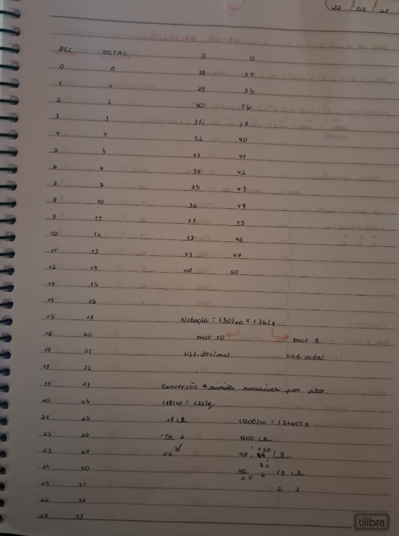
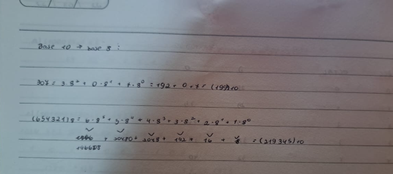
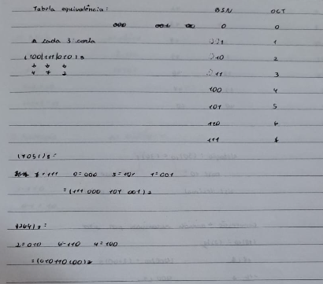
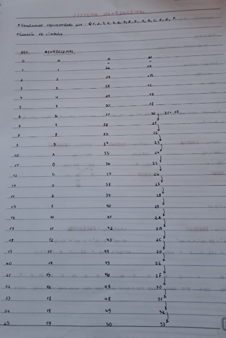
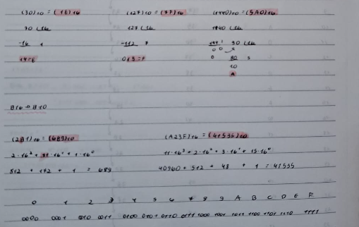
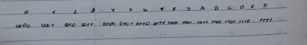

Um sistema de numeração possui determinados números e símbolos que podem ser combinados para representar valores. Foram ensinados três tipos de sistemas numericos, o binário, o octal e o hexadecimal.
Os números binarios sao compostos apenas por dois simbolos, o "0", e o "1". São chamados de numeros de base dois e são representados da em notação seguinte forma: (1110)2 = (14) 10.
Para representar os numeros do sistema decimal em numeros do sistema binario, é necessario começar colocando o símbolo "0" para representar o número 0, depois, o simbolo "1" para representar o número 1, e em seguida, como acabaram os simbolos, é necessario que se faça uma junção dos dois simbolos, começando sempre pelo "1", ou seja, o proximo numero seria 10, representando o 2 dos decimais. Agora, como o "1" ja foi usado com o "0", ele precisa ser usado com o "1" para que represente o numero 3, e assim sucessivamente ate que se chegue ao numero desejado.
Outra forma de fazer a conversão dos números decimais para os binários é fazer sucessivas divisões por 2 até que não seja mais possivel dividir sem colocar vírgula. O resto das divisões sempre será 0 ou 1, então só é preciso anotar esses restos da direita para a esquerda e lá estará seu número inicial convertido em número binário.
Para converter um numero binario para um numero de base 10, ou seja, um numero no sistema decimal, é necessário multiplicar cada algarismo binário por uma potência de dois, começando sempre por 0, e sempre aumentando uma potência a cada algarismo da direita para a esquerda.
Também é possível realizar operações como a adição e a subtração com números binários seguindo as seguintes regras:
Os números octais são compostos apenas por oito simbolos (0,1,2,3,4,5,6,7). São chamados de numeros de base oito e são representados em notação da seguinte forma: (30)10 = (36)8.
Para transformar um numero de base 10 em um numero de base 8, primeiramente se começa usando os 8 simbolos sozinhos, "0" representando 0, "1" representando 1, e assim sucessivamente até o 7. Depois será necessario fazer arranjos com os numeros, comecando pelo 1 e juntando com cada algarismo, depois fazendo arranjos com o 2, depois 3, 4...
Mas tem um modo mais fácil, que é fazzendo sucessivas divisões por oito. Você vai escolher o numero desejado, e basta dividi-lo por 8 e anotar o resto da operação, depois dividir o resultado por 8 e anotar o resto da direita pra esquerda, e assim sucessivamente até que nao seja mais possível a divisao sem colocar vírgula.
Cada algarismo do numero deve ser multiplicado por pot~encias de oito, começando pela direita, e sempre aumentando uma potencia da direita para a esquerda.
Um digito octal é representado a cada três digitos binarios, então para transformar um binario em um octal, basta divir o numero binario de tres em tres digitos e ver a tabela de equivalência para ver qual numero equivale aos tres algarismos. Quando um numero binario tem somente dois ou um algarism só, é necessário adicionar zeros para que todos fiquem padronizados com três algarismos.
Esse é o procedimento contrario do anterior, basta olhar cada digito octal e ver quais os 3 digitos binarios ele representa na tabela equivalência.
O sistema hexadecimal é composto por dezesseis simbolos (0,1,2,3,4,5,6,7,8,9,A,B,C,D,E,F). Também é chamado de numeros de base 16 e em notação é escrito dessa forma: (2B1)16 = (689)10
Para transformar um numero decimal em um numero hexadecimal, é necessario fazer a mesma coisa que foi feita com os binarios e os octais, primeiramente se usa os 16 simbolos sozinhos para representar os primeiros numeros decimais, depois, é só ir fazendo arranjos com cada simbolo, comecando pelo 1.
Mas também tem o modo das divisões sucessivas por 16, onde se anota o resto da direita para a esquerda, e divide o resultado ate nao ser mais possivel sua divisao sem usar virgula. Mas em alguns casos, o resto da operação aparecera como 10, 11, 12, 13, 14 e 15, e nesses casos, devemos substituir os numeros pelos simbolos A, B, C, D, E, e F respectivamente.
É preciso fazer a mesma coisa feita nos binarios e nos ooctais, multiplicar cada digito por potencias de 16, e convertendo os simbolos A, B, C, D, E, e F por seus respectivos valores.
A cada quatro digitos binarios, um hexadecimal é designado. E uma tabela de equivalencia é elaborada, com os primeiros 16 numeros binarios representando os 16 simbolos hexadecimais, lembrando sempre de adicionar zeros para deixar todos binarios padroes com quatro algarismos.
No começo, quando estavamos só lidando com numeros binarios, eu tinha achado bem facil, porque de fato é, se for analisar cada sistema numerico individualmente, fica facil pra entender, mas quando junta todos eles eu fico um pouco confusa, por exemplo, para transformar um numero binario em hexadecimal, eu não conseguiria fazer direto, talvez porque eu não tenha fixado muito bem essa parte do conteúdo, mas eu conseguiria transformar o numero binario e numero de base dez e depois passar o resultado para o hexadecimal. Fora esse pequeno problema de ficar um pouco perdida quando todos estão juntos, nao tive nenhuma dificuldade e acho que o conteúdo foi bem explicado, o erro foi meu de não ter corrido atrás para fixar bem o conteúdo.